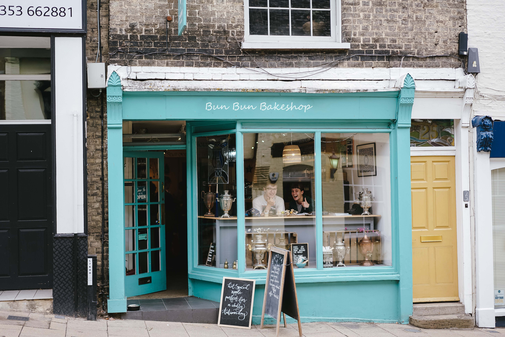

About Bun Bun Bakeshop
Bun Bun Bakeshop is a family-run bakery in the Shadyside neighborhood of Pittsburgh, Pennsylvania. Founded in 2016 by a mother-daughter team, Bun Bun Bakeshop specifically caters to those with food allergies, something the founding family is intimately familiar with. The store aims to provide delicious cinnamon buns for celebratory occasions for all to enjoy even those who may have some dietary restrictions. With their inherent swirls, cinnamon buns are a fun and playful treat for all your special occasions!
Hours
Monday - Thursday: 10:00 am - 5:00 pm
Friday - Saturday: 9:00 am - 7:00 pm
Sunday: Closed
Location
112 Spring Street
Pittsburgh, PA 15232
Contact
info@bunbunbakeshop.com